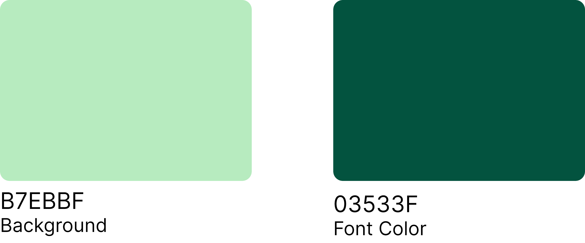

Alexis Strobin's Portfolio Site
alexisstrobin.comCoded a custom website template to fit the client's vision. Worked with the client to establish their wants and needs, designed and populated site assets, launched a fully functional and polished website.

Project Pages
Designed and built pages for each project featured on the site's homepage. Created assets to display the website view of the final product, highlighting how the client's copywriting was incorporated into the work.


Design Process
Collaborated with the client to establish a vision for the site. Created a color palette, chose fonts, drafted an outline of the pages, and planned how the user would navigate between project pages.
